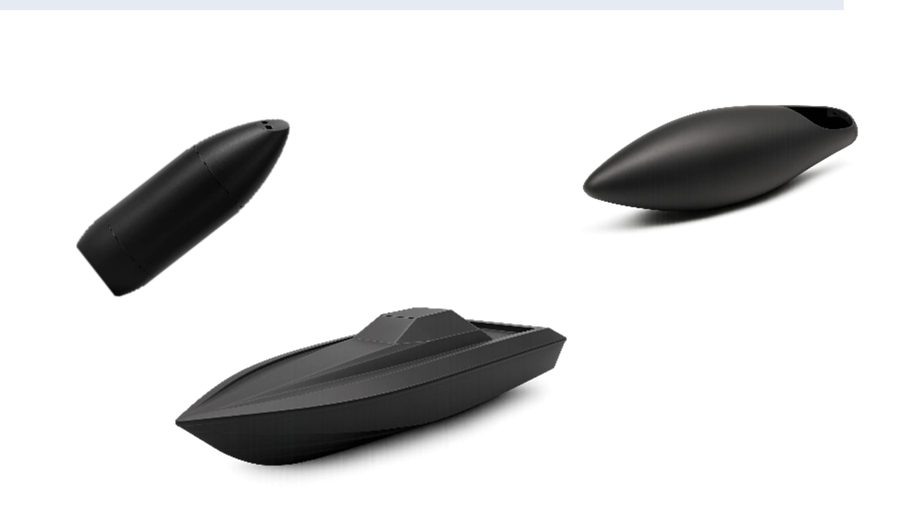
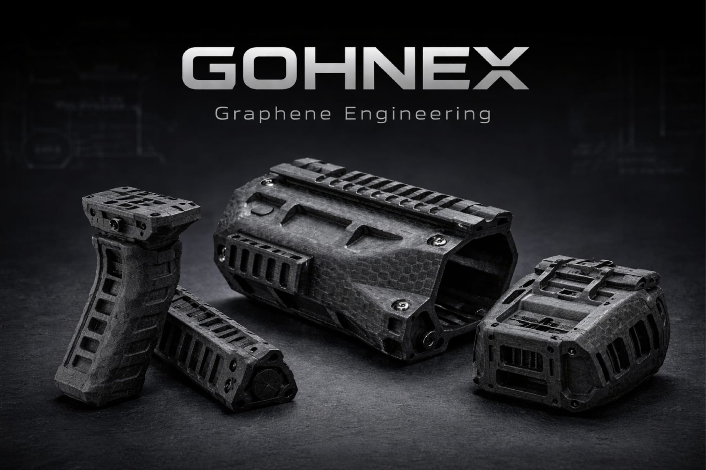

Tecnologías propias del grupo
El punto de partida es común. El punto de llegada son dos plataformas con perfiles industriales distintos.
Composites híbridos de alta cohesión interlaminar
Grafeno funcionalizado, fibras y resinas combinados mediante un proceso propietario. La clave está en la aplicación de un compuesto exclusivo de grafeno capaz de sustituir, a nivel estructural molecular, las fuerzas de Van der Waals por uniones covalentes mucho más fuertes y de naturaleza iónica.
Esa modificación es la causa técnica de las altas prestaciones de nuestros materiales frente a otros composites industriales. No es un aditivo: es un cambio en cómo se sostiene el material.
Patente US11807761Donde otros ven límites, diseñamos materiales
Diagrama del proceso: grafeno + fibras + resinas → GOHNEX / MultiLayer
El hueco que no cubría ningún material
El mapa de materiales composite está partido en dos: alta productividad con resistencias bajas, o alto rendimiento con producciones bajas o muy bajas. MultiLayer y GOHNEX ocupan el espacio intermedio.
| Material | Resistencia a tracción | Capacidad de producción |
|---|---|---|
| Plástico | 25 – 70 MPa | Muy alta |
| Impresión 3D / SMC | 80 – 400 MPa | Muy alta a baja |
| GOHNEX | 80 – 200 MPa | Muy alta |
| MultiLayer FV | 200 – 600 MPa | Alta |
| MultiLayer FC | 600 – 1.200 MPa | Media |
| Fibra de carbono | 800 – 1.100 MPa | Baja |
| Autoclave carbono | 1.000 – 1.500 MPa | Muy baja |
Valores de referencia del mapa industrial de materiales composite de Graphenglass.

Ingeniería de grafeno en composites híbridos
Construcción por capas para ajustar prestaciones, piezas de gran tamaño sin juntas y capacidad de integrar funciones adicionales —incluida la reducción de firma electromagnética.
Develop with MultiLayer
Graphene Engineering
Arquitectura híbrida de grafeno y nanotubos de carbono. Libertad geométrica total, alta tenacidad y excelente comportamiento frente a impacto y fatiga.
Develop with GOHNEX¿Cuál encaja con tu aplicación?
La elección depende del requisito, la geometría y el volumen. Es exactamente la primera conversación que tenemos en cada proyecto.